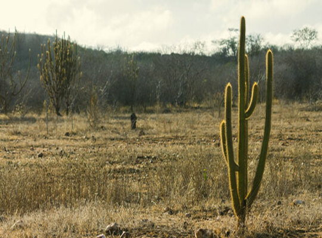
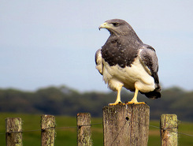
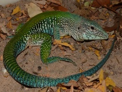
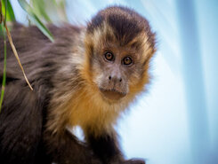
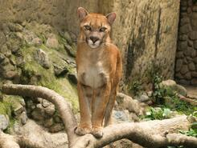
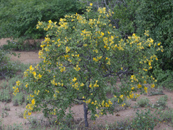
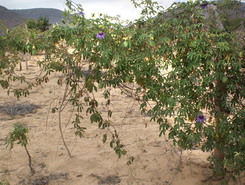

Características

O bioma da Caatinga possui áreas com clima semiárido, uma característica importante que determina a Caatinga como ela é. No brasil, o bioma ocupa 11% do território nacional e está localizado em oito estados do nordeste, também ocorrendo em algumas áreas da região Sudeste, ao norte de Minas Gerais.
Possui o relevo principalmente formado por chapadas, depressões e planaltos, todos com solos formando "mosaicos" devido à origem das rochas. O bioma é mais rico do que se costuma imaginar, principalmente nas áreas chamadas de brejos, onde a úmidade é alta e solos são férteis, com alta biodiversidade.
Lista de estados
Piauí, Ceará, Rio Grande do Norte, Paraíba, Pernambuco, Alagoas, Sergipe, Bahia e Minas Gerais. Parte de Maranhão
Fauna
(Exemplos)
Águia-Chilena |
Ararinha-Azul |
Calango-de-Cauda-Verde |
|  |  |
 |
| Ave ameaçada de extinção. Também conhecida como gavião-de-serra por fazer voos planos quando em busca de comida. | Considerada extinta na natureza durante o ano 2000, mas alguns indivíduos ainda viviam em cativeiros, o que permitiram sua reintrodução na natureza. Parecidas com araras normais mas, como seu nome sugere, menores. | Réptil ameaçado de extinção que se alimenta de pequenos animais. Apesar da cor geral variar de um indivíduo para o outro, a cauda sempre é amarela. |
Cutia |
Gambá-de-Orelha-Branca |
Jiboia-Constritora |
 |
 |
 |
| Muito semelhante a preá, um roedor de aparência semelhante a uma capírava, mas bem menor. Vivem nas raízes das árvores e se alimentam de frutos e sementes. | Animal da família dos marsupiais, diferenciado pela coloração branca em toda sua cabeça e principalmente em suas orelhas. Se alimentam de pequenos animais, ovos e plantas. | Serpente capaz de alcançar os quatro metros de comprimento, se alimentando a partir de pequenos mamíferos, aves e lagartos, todos mortos sufocados pela jiboia. |
Macaco-Prego |
Onça-Parda |
|  |  |
| Animal quase ameaçado devido ao tráfico de animais e destruição de seu habitat. O macaco-prego é uma espécie nativa do Brasil que é muito comum na Caatinga mas também é encontrado no Cerrado, vivendo em árvores e arbustos. | Segundo maior felino do Brasil e um dos mamíferos com maior distribuição geográfica em todo o mundo. Também conhecido como "puma", um animal que caça durante a noite, variando sua dieta de acordo com animaís disponíveis e predadores que afetem sua caça. |
Flora
(Características)
O bioma apresenta principalmente vegetação de baixo porte, com maior riqueza de acordo com a quantidade de água disponível na área. Apesar do que pensam, a Caatinga não apenas formada por cactos e plantas mortas. Há uma grande diversidade de cores que podem ser encontradas na flora do bioma, como pode ser mostrado a seguir.
Mandacaru |
Catingueira |
Maracujá-da-Catinga |
 |
 |
 |